🛠️ 環境設置：安裝所有需要的工具
照著做，十分鐘內把環境全部搞定
📥 第一步：安裝 Kiro IDE
前往 kiro.dev 官方網站，點擊 Download 按鈕，選擇你的作業系統版本下載安裝檔。
- 安裝過程中，把 Other 區塊的選項全部打勾，之後就能通過右鍵啟動 Kiro。
- 第一次開啟 Kiro，會要求你登入帳號。直接用你的 Google 帳號登入就可以了，最快最方便。
- 如果安裝或使用過程中遇到問題，可以參考 AWS 官方的 Kiro FAQ 與安裝指南，裡面有完整且可靠的說明。
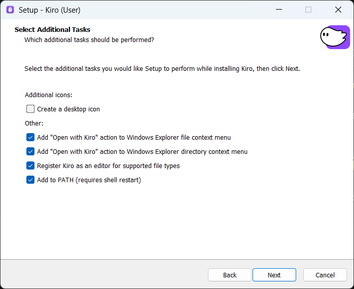
🐍 第三步：安裝 Python
前往 python.org/downloads，點擊頁面上最新的 Python 3.14.x 安裝檔下載安裝。
下載時不要按大按鈕(Python install manager)，點下面有底線的 Python 3.14.x 安裝檔即可。
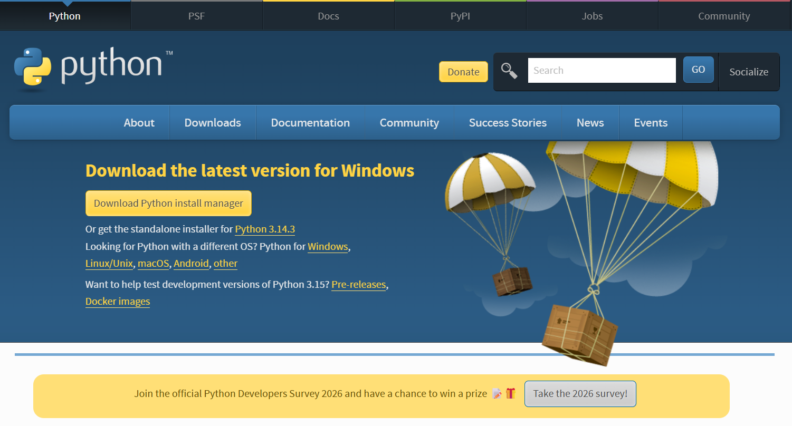
安裝時記得把最下面的 Add python.exe to PATH 打勾，這樣 Kiro 才能找到 Python。

🔑 第四步：申請 Tavily API Key
Tavily 是一個搜尋工具，裝好之後 Kiro 就能上網查最新資料。免費帳號每月有 1,000 次搜尋額度，不用綁信用卡。
- 打開 app.tavily.com，點 Sign Up 註冊帳號（可以用 Google 帳號直接登入）。
- 登入後會看到你的 API Key。在 OPTIONS 中，點左邊第二個圖示就能複製 API Key。
- API Key 是你的帳號密碼，不要分享給別人，也不要貼在公開的地方。
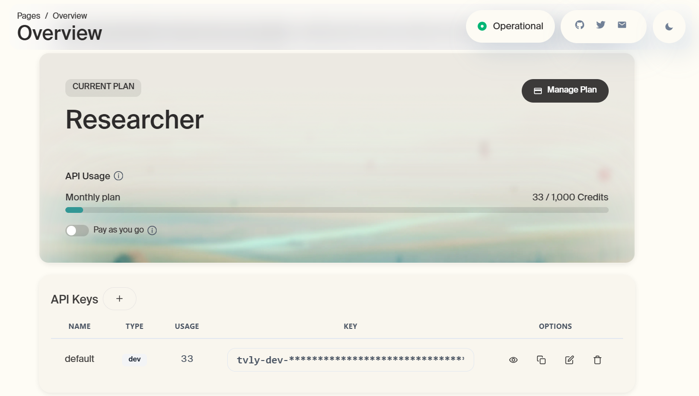
🖥️ 打開 Kiro，認識你的工作環境
開一個資料夾、看懂三個區塊、動手試一次就上手
📂 怎麼打開 Kiro？
在電腦上新建一個空白資料夾（名字隨便取），打開資料夾後在空白處點滑鼠右鍵。
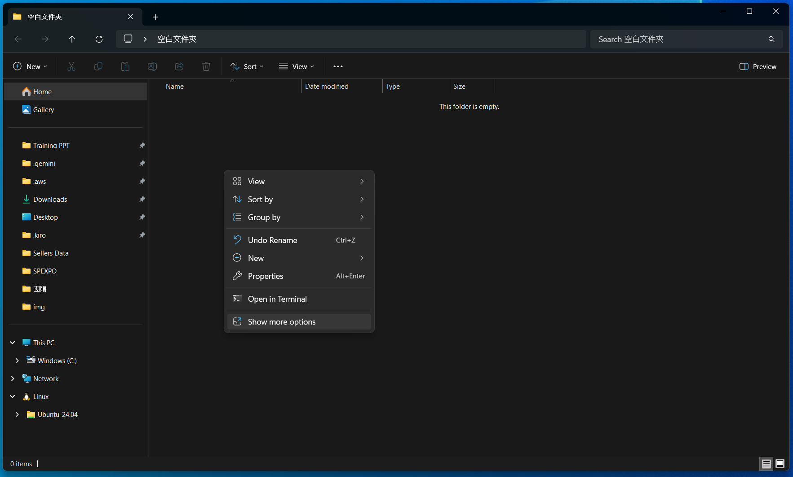
如果右鍵選單裡沒有看到 Open with Kiro，點最下面的 Show more options。
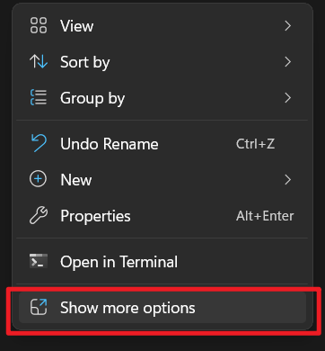
在展開的選單裡找到 Open with Kiro，點下去就會打開 Kiro。
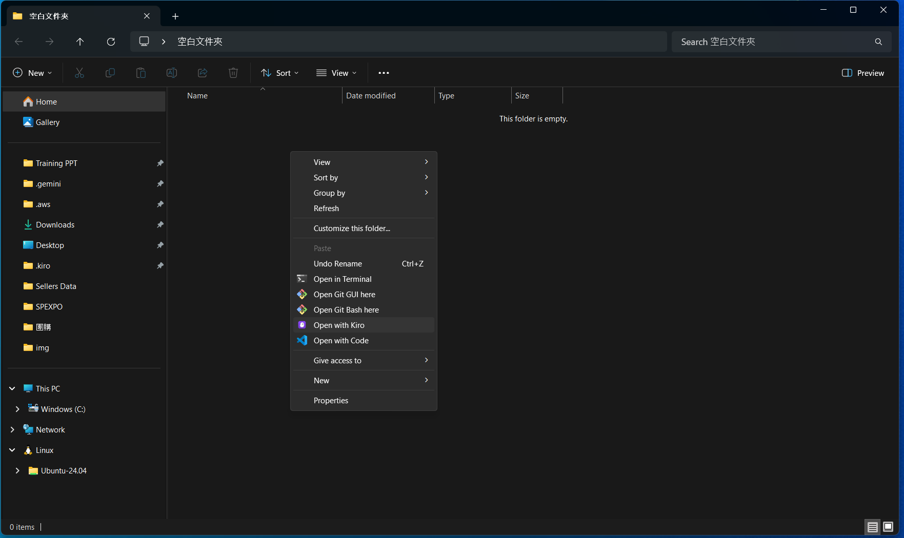
💡 每個專案用一個獨立的資料夾
AI 會根據資料夾裡的內容來理解用戶的需求，如果把所有東西混在同一個資料夾，AI 容易搞混。
為了能讓 AI 專注於當前任務，建議每個新專案都要開一個新資料夾進行維護。
📸 介面總覽
打開 Kiro 之後，畫面長這樣。左邊放檔案，中間看內容，右邊跟 AI 講話。
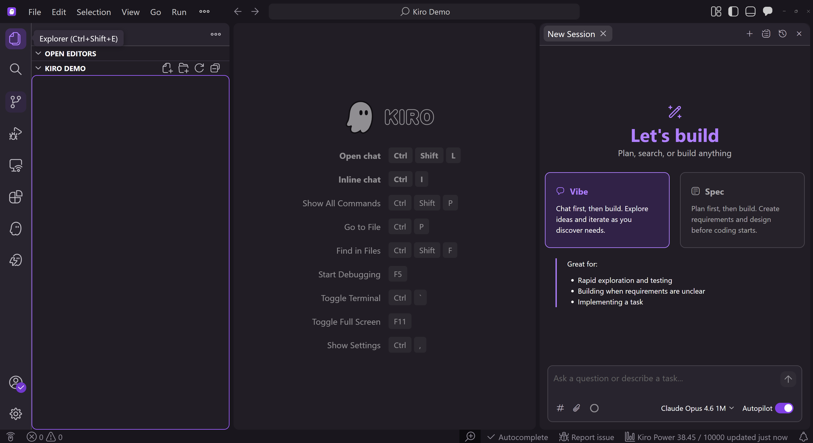
你的檔案都在這裡。想找之前做過的東西，或看看 AI 幫你加了什麼新檔案，從左邊找就對了。
AI 幫你寫好的東西會出現在這裡，你可以直接看結果，覺得哪裡不對也能自己改。
這裡就是你跟 AI 講話的地方，打中文告訴它你想幹嘛就好。我們課程中都用 Vibe 模式。
🚀 現場體驗：檔案區就是你的資料夾
左邊的檔案區不是什麼特別的東西，它就是你電腦裡的資料夾。做兩個小試驗就知道了：
- 在桌面新建一個資料夾，叫 my-test。
- 打開資料夾，在空白處點滑鼠右鍵，選 Show more options → Open with Kiro。
試驗一：在 Kiro 裡新增檔案，去資料夾找
- 在 Kiro 右邊的對話區輸入：幫我建一個 hello.txt，內容寫「你好」
- Kiro 會在左邊的檔案區產生一個 hello.txt。
- 回到桌面，打開 my-test 資料夾，雙擊 hello.txt — 裡面寫的就是「你好」。
試驗二：在資料夾裡改檔案，回 Kiro 看
- 在剛才打開的 hello.txt 裡，把「你好」改成 hello，然後存檔關閉。
- 回到 Kiro，點一下左邊檔案區的 hello.txt。
- 看中間的工作區 — 內容已經從「你好」變成 hello 了。
兩邊是同一個東西，Kiro 只是用不同的介面顯示你的資料夾而已。
🔌 讓 Kiro 學會上網搜尋
幫 AI 接上搜尋工具，連結網路查詢最新資料
🧪 先試試看
在 Kiro 右邊的對話區輸入這個問題：
今天西雅圖降雨機率是多少？
它可能會說「我無法上網查詢即時資訊」，或者嘗試用內建的 Fetch 工具（一種上網的指令），拿到相對薄弱的資訊。這就是 AI 普遍遇到的問題：模型被訓練好之後，裡面的資料就凍結了，停在訓練完成的那一天。所以需要接上第三方工具，才能讓模型具備上網的能力。
💡 接上第三方搜尋工具
為了解決聯網的問題，本堂課程我們會使用 Tavily，一個專門給 AI 用的搜尋服務來作演示。
Tavily 免費帳號每月有 1,000 次搜尋額度，而且不用綁信用卡，對日常使用場景來說很夠用了。
市場上類似的工具也很多，大家課後可以自己再做研究，選擇自己偏好的搜尋工具。
⚙️ 設定搜尋工具
- 在 Kiro 畫面左邊的導航欄，選擇倒數第二個圖示（Kiro 的 logo）。
- 點擊最下方的 MCP SERVERS 區域，再點右上角的 Open MCP Config。
- Kiro 會打開一個設定檔。把設定檔中的所有內容刪掉，然後把下方的設定碼完整貼上。
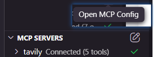
{
"mcpServers": {
"tavily": {
"command": "npx",
"args": ["-y", "tavily-mcp@latest"],
"disabled": false,
"autoApprove": [
"tavily-search",
"tavily-extract",
"tavily-map",
"tavily-crawl"
],
"env": {
"TAVILY_API_KEY": "tvly-xxxxxxxxxx 每個用戶自己的密鑰"
}
}
}
}
- 完成更新後，完整關閉 Kiro 並重新開啟。回到 MCP 介面，檢查 Tavily 後方是否有出現綠色勾勾。
- 常見的錯誤包含：代碼貼錯、沒有重新啟動 Kiro，或者 Node.js 沒有安裝好。
🚀 再試一次
再問一次剛才的問題。成功設置的話，會發現 Kiro 呼叫了 Tavily，查詢了更完整的天氣資料。
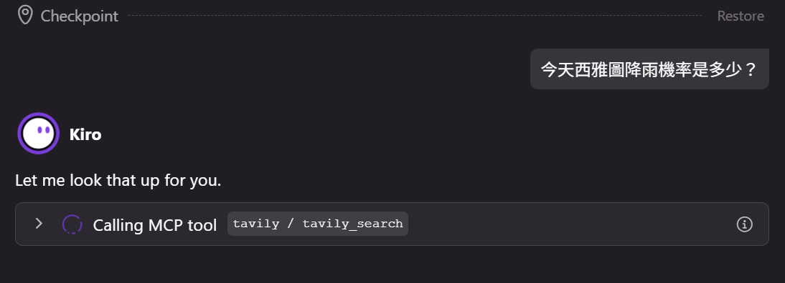
📋 進階練習：做一份品牌分析報告
請幫我針對「___」這個品牌做一份分析報告。 品牌資訊： - 品牌名稱：___ - 主營品類：___ - 目前銷售國家：___ 搜尋原則：每個主題最多搜尋 1-2 次就好，不用反覆追查，把時間留給分析。 請涵蓋以下三個主題，並針對搜到的資料做深入解讀： 1. 品牌概況：公司背景、主要產品線、品牌定位 2. Amazon 表現：熱賣產品、定價策略、評價中看到的優缺點 3. 近期動態與機會：近期新聞、市場趨勢，並給出你的觀察與建議 請著重在「分析與洞察」，不要只是把搜到的資料條列出來，多加入你的推論與串聯。 完成後把報告存成 report.html，用繁體中文撰寫，排版清楚好讀。
複製後貼到 Kiro 對話區，AI 會上網搜尋你的品牌資料，整理成一份 HTML 報告。
🧩 Skill：一鍵升級 AI 的專業能力
不用寫程式、不用設定，裝上 Skill 就能讓 AI 變成各領域的專家
🤔 Skill 是什麼？
簡單來說，Skill 就是寫給 AI 看的專案說明書，讓 AI 理解怎麼把一件事情做好，一種提煉於隱性智慧的顯性文檔。
不用寫程式、不用改設定檔，說一句話就能裝好。
裝完直接生效，不需要累計或者沉澱更多使用記錄。
Skill 是純文字檔，可以藉由人工完成監察，判斷內容。
🚀 現場體驗：安裝 UI/UX 設計 Skill
第一步：安裝 Skill
在 Kiro 的對話區貼上以下指令：
請幫我完成 UI/UX PRO MAX Skill 的安裝，使用以下腳本（請依照我的系統自動選擇）： Windows（PowerShell）： iwr -useb https://raw.githubusercontent.com/MozHubYo/kiro-skills-installer/main/install-ui-ux-pro-max.ps1 | iex macOS： curl -fsSL https://raw.githubusercontent.com/MozHubYo/kiro-skills-installer/main/install-ui-ux-pro-max.sh | bash 執行完畢後，請： 1. 確認 ~/.kiro/skills/ui-ux-pro-max/SKILL.md 存在 2. 確認 SKILL.md 開頭有 YAML front-matter（--- 開頭、包含 name: 和 description:） 3. 提醒我執行「Developer: Reload Window」讓 Kiro 重新掃描 Skills，然後在左側面板 AGENT STEERING & SKILLS > Global 確認有出現 ui-ux-pro-max
安裝成功後，在左側面板的 AGENT STEERING & SKILLS 下方，Global 區域會出現 ui-ux-pro-max 這個 Skill：
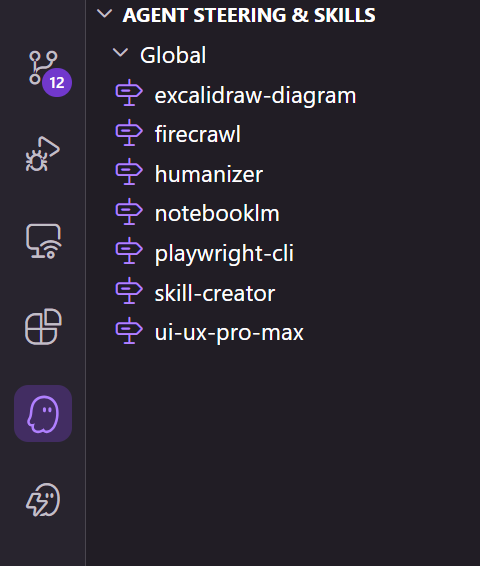
💡 如果 AI 回覆安裝失敗
最常見的兩個原因：Node.js 沒裝好（回第一頁確認），或是資料夾路徑有中文／空白（把專案搬到 C:\kiro-test 這種純英文路徑再試一次）。
第二步：使用 Skill
只要在文字中，提到Skill，AI 就會自動去讀取相關的技能，進行優化。
選好選項後，複製指令貼到對話區：
使用 UI/UX PRO MAX Skill，對 report.html 進行以下優化： - 這份報告要給「___」看 - 設計風格：___ - 加入清楚的資訊層級：標題、小標、重點數據要一眼就能看到 - 數據部分用視覺化的方式呈現（例如卡片、標籤、色塊區分） - 整體排版要專業、好讀，像一份正式的商業報告 直接修改 report.html，用繁體中文。
🔍 去哪裡找更多 Skill？
很多人會把自己做的 Skill 分享到 GitHub (開源社群，可以想像是工程師的 Thread) 上，直接去 GitHub 逛是最快的。
GitHub 上的星星數（⭐）就像點讚，星星越多代表越多人覺得好用，剛開始挑 Skill 的時候可以參考。
🏢 官方出品：Anthropic Skills
Anthropic 自己維護了一個 Skill 倉庫，裡面有各種經過官方測試的 Skill
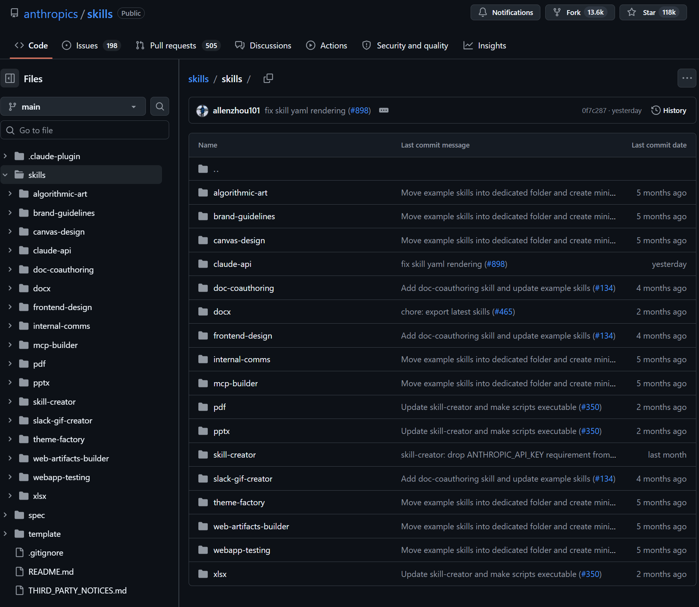
😂 同事 Skill
同事 Skill 則是最近 GitHub 上爆紅的SKILL，他可以通過歷史文件，模擬出同事的表現。
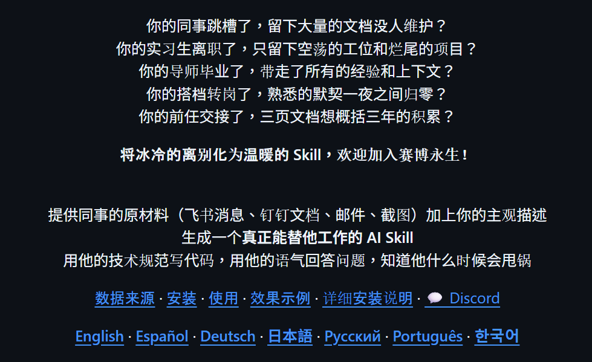
🌐 實戰：用 AI 自動操作瀏覽器
讓 AI 幫你開網頁、點按鈕、抓資料，把重複的瀏覽器操作變成自動化流程
🤔 Playwright CLI 是什麼？
Playwright CLI 是微軟出品的工具，可以讓 AI 像人一樣操作瀏覽器：開網頁、填表單、截圖、抓資料。
而且搭配 Playwright CLI Skill，AI 就知道怎麼使用，不需要用戶記住指令。
📦 安裝 Playwright CLI
在 Kiro 的對話區貼上以下指令，讓 AI 幫你一次搞定：
請幫我完成 Playwright CLI 的安裝，使用以下腳本（請依照我的系統自動選擇）： Windows（PowerShell）： iwr -useb https://raw.githubusercontent.com/MozHubYo/kiro-skills-installer/main/install-playwright-cli.ps1 | iex macOS： curl -fsSL https://raw.githubusercontent.com/MozHubYo/kiro-skills-installer/main/install-playwright-cli.sh | bash 執行完畢後，請： 1. 確認 ~/.kiro/skills/playwright-cli/SKILL.md 存在 2. 確認 SKILL.md 開頭有 YAML front-matter（--- 開頭、包含 name: 和 description:） 3. 執行 playwright-cli --version 告訴我版本號 4. 提醒我執行「Developer: Reload Window」讓 Kiro 重新掃描 Skills，然後在左側面板 AGENT STEERING & SKILLS > Global 確認有出現 playwright-cli
安裝成功後，可以在左側面板的 AGENT STEERING & SKILLS 看到 playwright-cli 這個 Skill。
🔑 Step 1：完成設置（登入）
很多網站需要登入才能操作。加上 --persistent 參數，瀏覽器就會像你平常用 Chrome 一樣記住登入狀態，關掉再開都還在。
在 Kiro 的對話區貼上：
用 Playwright CLI 打開瀏覽器， 要加上 --headed（我要看到畫面）和 --persistent（保留登入狀態）這兩個參數， 然後打開 https://www.amazon.com/。
瀏覽器會跳出來，你可以像平常一樣手動登入你的帳號。登入完成後，以後只要用同樣的指令開瀏覽器，登入狀態就會自動帶入，不需要額外操作。
🔍 Step 2：跟著 AI 一步一步抓競品評論
登入完成後，我們來實際操作一次，讓 AI 去 Amazon 抓一個產品的評論。
請用目前開著的瀏覽器，幫我做以下操作： 1. 打開這個 Amazon 產品頁面：https://www.amazon.com/dp/___ 2. 找到評論區，抓取最新的 5 則評論（評分、標題、內容、日期） 3. 把結果整理成一份表格給我看
🔧 Step 3：把操作變成可重複執行的腳本
上面的操作是「一次性」的，如果每天都要做同樣的事，寫成腳本，以後一鍵執行。
在 Kiro 的對話區貼上：
請把剛才抓評論的操作寫成一個 .ps1 腳本， 檔名叫 scrape-reviews.ps1， 讓我以後只要執行這個腳本，就能自動完成同樣的事。
AI 會自動生成 scrape-reviews.ps1 腳本檔案。以後要執行時，只要在終端機輸入：
./scrape-reviews.ps1
就能自動跑完整個流程，而且完全不花費 Token。
📝 請幫我們填寫課後問卷
花一分鐘讓我們知道你的想法，幫助我們把課程做得更好